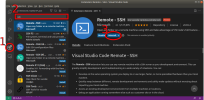

Please make sure to follow these instructions before attending our workshops. If you have any issues installing the software please get in touch with us beforehand.
There are three recommended pieces of software needed to work with the HPC:
- a terminal
- a file transfer software
- a text editor with the ability to edit files on a remote server
This document gives instructions on how to install or access these on different operating systems.
Windows 10
- Terminal (we will use the program MobaXterm to have a Unix-like terminal on Windows):
- Go the the MobaXterm download page and download the “Installer edition” (green button). Unzip the downloaded file and double-click the
MobaXterm_installer_21.2installer (note: the version number might be slightly different). Accept default options during installation. - After completing the installation, go to your Windows Menu, search for “MobaXterm” and launch the application, to test that it was installed successfully.
- Go the the MobaXterm download page and download the “Installer edition” (green button). Unzip the downloaded file and double-click the
- File transfer software:
- Go to the Filezilla Download page and download the file FileZilla_3.54.1_win64-setup.exe (the version might be slightly different). Double-click the downloaded file to install the software, accepting all the default options.
- After completing the installation, go to your Windows Menu, search for “Filezilla” and launch the application, to test that it was installed successfully.
- text editor:
- Go to the Visual Studio Code download page and download the installer for Windows. Double-click the downloaded file to install the software, accepting all the default options.
- After completing the installation, go to your Windows Menu, search for “Visual Studio Code” and launch the application.
- Go to “File > Preferences > Settings”, then select “Text Editor > Files” on the drop-down menu on the left. Scroll down to the section named “EOL” and choose “\n” (this will ensure that the files you edit on Windows are compatible with the Linux operating system on the HPC).
- Follow the instructions in “Configuring Visual Studio Code” at the bottom of this page.
Mac
Unix terminal: Mac OS already has a terminal available. Press ⌘ + space to open spotlight search and type “terminal”.
File transfer software:
- Go to the Filezilla Download page and download the file FileZilla_3.54.1_macosx-x86.app.tar.bz2 (the version might be slightly different).
- Note: If you are on Mac OS X 10.11.6 download version 3.51.0 instead.
- Go to the Downloads folder and double-click the file you just downloaded to extract the application. Drag-and-drop the “Filezilla” file into your “Applications” folder.
- You can now open the installed application to check that it was installed successfully (the first time you launch the application you will get a warning that this is an application downloaded from the internet - you can go ahead and click “Open”).
- Go to the Filezilla Download page and download the file FileZilla_3.54.1_macosx-x86.app.tar.bz2 (the version might be slightly different).
text editor:
- Go to the Visual Studio Code download page and download the installer for Mac.
- Go to the Downloads folder and double-click the file you just downloaded to extract the application. Drag-and-drop the “Visual Studio Code” file to your “Applications” folder.
- You can now open the installed application to check that it was installed successfully (the first time you launch the application you will get a warning that this is an application downloaded from the internet - you can go ahead and click “Open”).
- Follow the instructions in “Configuring Visual Studio Code” at the bottom of this page.
Linux (Ubuntu)
Unix terminal: Ubuntu already has a terminal available. Press Ctrl + Alt + T to open it.
File transfer software:
- Filezilla often comes pre-installed in major Linux distributions such as Ubuntu. Search your applications to check that it is installed already.
- If it is not, open a terminal and run:
- Ubuntu:
sudo apt-get update && sudo apt-get install filezilla - CentOS:
sudo yum -y install epel-release && sudo yum -y install filezilla
- Ubuntu:
text editor:
- Go to the Visual Studio Code download page and download the installer for your Linux distribution. Install the package using your system’s installer.
- Follow the instructions in “Configuring Visual Studio Code” at the bottom of this page.
Configuring Visual Studio Code
We will use an extension called “Remote-SSH”. To install the extension (see Figure):
- Click the “Extensions” button on the side bar (or use Ctrl + Shift + X)
- In the search box type “remote ssh” and choose the “Remote - SSH” extension
- Click the “Install” button in the window that opens

Installing Remote-SSH extension in VS Code